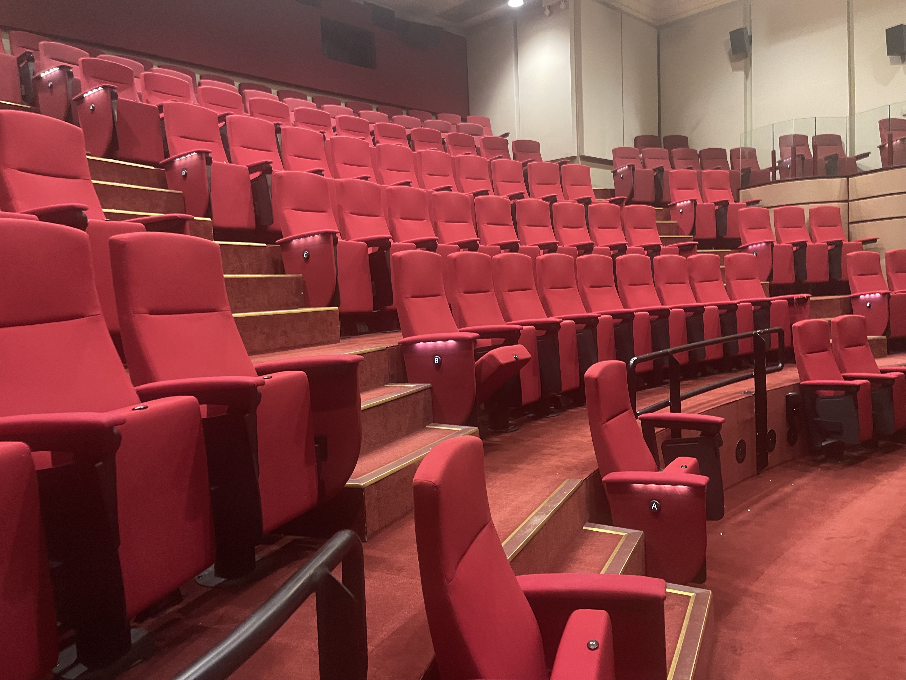

The Australasian Region Biometrics conference is a biannual conference sponsored by the International Biometric Society (Australasian Region). The conference is a forum for biometricians, statisticians, and those interested in the development and application of statistical and mathematical theory and methods to problems in the biosciences. The conference is open to members and non-members of the Society.
Open for abstract submissions
2025-04-14
We are pleased to invite submissions for abstracts for the Biometrics in the Bush Capital, to be held on 24th-28th November 2025 at Canberra, Australia. The conference aims to bring together researchers, practitioners and educators to share ideas, current research findings, and emerging trends in the development and application of statistical and data science theory and methods to problems in biosciences.
Key themes and topics
We welcome abstracts addressing, but not limited to, the following areas:
Submission guidelines
Abstracts should be a maximum of 250 words written in English presented either as a talk or a poster.
Submit your abstract here by 14th July 2025.
For questions or further information, please contact conference@biometricsociety.org.au.
For past updates, see here.
Follow @biometricsociety.org.au on Bluesky for the latest updates!
Important dates
| Date | |
|---|---|
| Apr 14 | Open for abstract submission |
| Jun 1 | Open for registration |
| Jul 14 | Closing date for abstract submission |
| Aug 1 | Lunchtime discussion proposals: email conference@biometricsociety.org.au |
| Aug 15 | Inform acceptance of the abstract |
| Sep 1 | Close for early bird registration |
| Nov 23 | OceaniaR Hackathon co-hosted with the Statistical Computing and Visualisation Section of the Statistical Society of Australia. |
| Nov 24 | Workshop |
| Nov 24-28 | Conference |
Sponsors
We are currently seeking sponsorship partners. Please contact conference@biometricsociety.org.au if you can sponsor our upcoming conference or go below for more informaton.